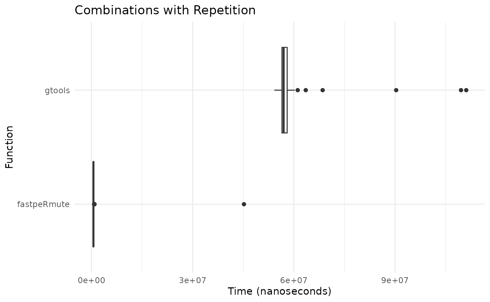
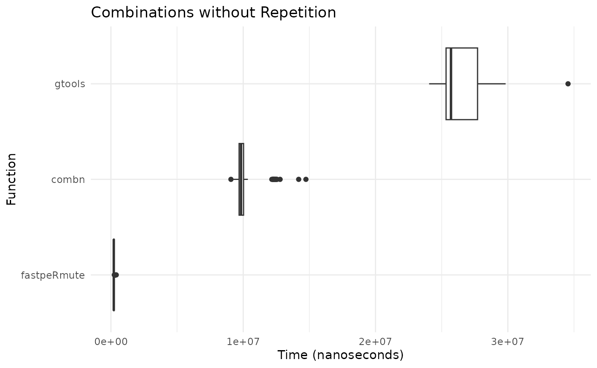
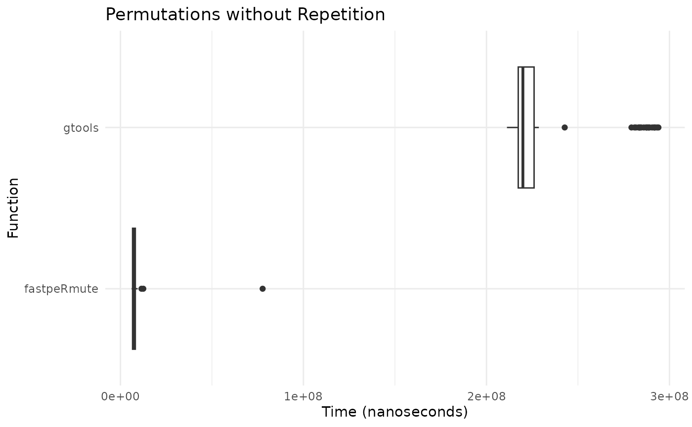
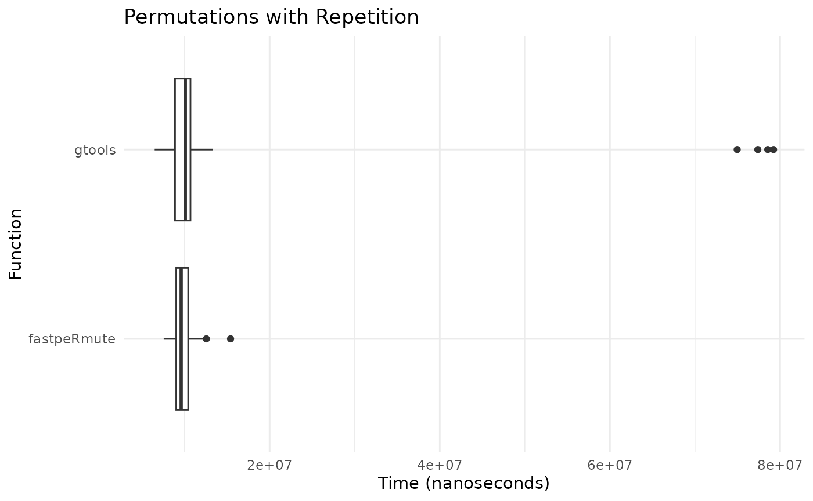

Benchmarking fastpeRmute
benchmark.RmdIn this vignette, we benchmark the performance of
fastpeRmute against the gtools package, which
provide similar functionalities. For this, we utilize the
microbenchmark package to measure execution times for
various functions under different scenarios.
Combinations with Repetition
mb_comb_with_rep <- microbenchmark(
fastpeRmute = fastpeRmute:::combinationsWithRepetition(20, 5),
gtools = gtools::combinations(n = 20, r = 5, repeats.allowed = TRUE),
times = 100L
)
df_comb_with_rep <- as.data.frame(mb_comb_with_rep)
ggplot(df_comb_with_rep, aes(x = expr, y = time)) +
geom_boxplot() +
theme_minimal() +
labs(title = "Combinations with Repetition", y = "Time (nanoseconds)", x = "Function") +
coord_flip()
Combinations without Repetition
mb_comb_without_rep <- microbenchmark(
fastpeRmute = fastpeRmute:::combinationsWithoutRepetition(20, 5),
combn = combn(x = 20, m = 5),
gtools = gtools::combinations(n = 20, r = 5, repeats.allowed = FALSE),
times = 100L
)
df_comb_without_rep <- as.data.frame(mb_comb_without_rep)
ggplot(df_comb_without_rep, aes(x = expr, y = time)) +
geom_boxplot() +
theme_minimal() +
labs(title = "Combinations without Repetition", y = "Time (nanoseconds)", x = "Function") +
coord_flip()
Permutations without Repetition
mb_perm_without_rep <- microbenchmark(
fastpeRmute = fastpeRmute:::permutationsWithoutRepetition(15,5),
gtools = gtools::permutations(n = 15, r = 5, repeats.allowed = FALSE),
times = 100L
)
df_perm_without_rep <- as.data.frame(mb_perm_without_rep)
ggplot(df_perm_without_rep, aes(x = expr, y = time)) +
geom_boxplot() +
theme_minimal() +
labs(title = "Permutations without Repetition", y = "Time (nanoseconds)", x = "Function") +
coord_flip()
Permutations with Repetition
mb_perm_with_rep <- microbenchmark(
fastpeRmute = fastpeRmute:::permutationsWithRepetition(15,5),
gtools = gtools::permutations(n = 15, r = 5, repeats.allowed = TRUE),
times = 100L
)
df_perm_with_rep <- as.data.frame(mb_perm_with_rep)
ggplot(df_perm_with_rep, aes(x = expr, y = time)) +
geom_boxplot() +
theme_minimal() +
labs(title = "Permutations with Repetition", y = "Time (nanoseconds)", x = "Function") +
coord_flip()
From the benchmark results, we can see the performance differences
between fastpeRmute, gtools, and base-r
functions when they exist.